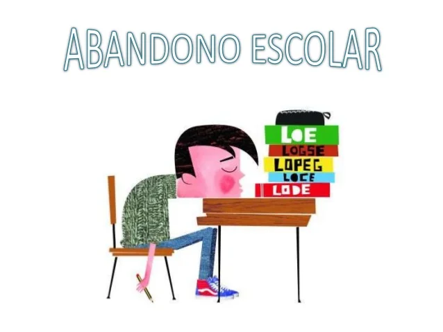

El abandono escolar no sucede por una sola razón. En muchos casos, los estudiantes enfrentan problemas económicos que los obligan a trabajar y dejar sus estudios.
También influye la falta de motivación. Cuando una persona siente que no puede lograrlo o que lo que aprende no tiene sentido, poco a poco pierde el interés en continuar.
Los problemas familiares, como conflictos en casa o la falta de apoyo emocional, afectan directamente el rendimiento escolar y pueden llevar al abandono.
